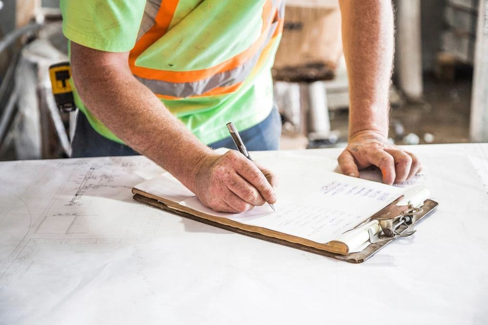
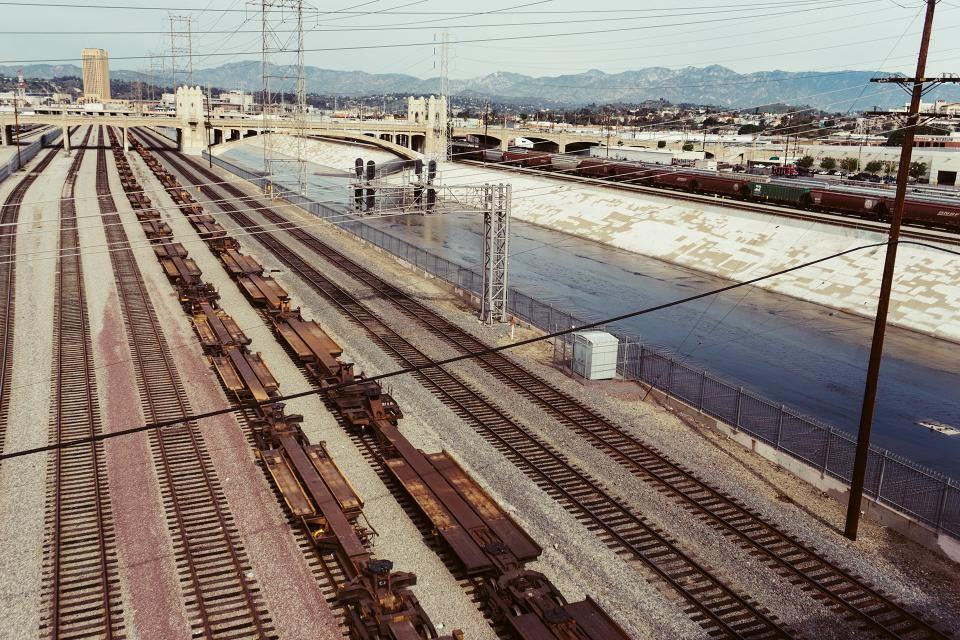
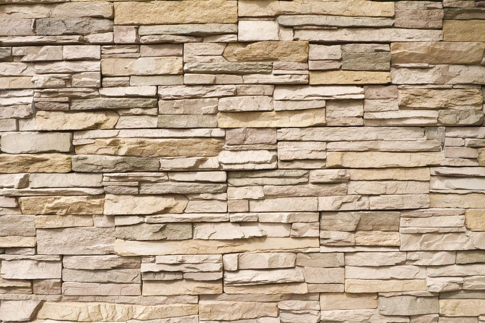
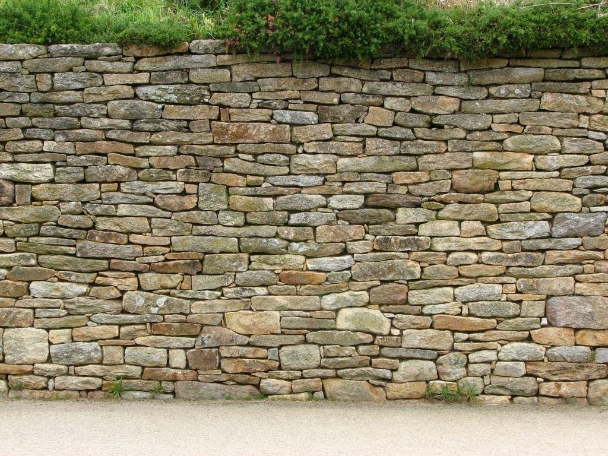

Referenser
Ett urval av uppdrag vi har utfört.
- 2026
Stortorget
12 000 m² gatsten, hällar och kantsten i grå blekingegranit.
- 2026

Kontorshuset Dockan
3 400 m² ventilerad fasad i flammad svart diabas.
- 2025

Färjeläget
38 000 ton blocksten levererad med fartyg direkt från fabriken.
- 2025

Stationsparken
Sittmurar, trappor och planteringskärl i röd småländsk granit.
- 2024

Gågatan
Storgatsten och ränndalar i två kulörer, lagda i solfjäder.
- 2024

Marktplatz
Smågatsten i svart diabas till ett historiskt torg i norra Tyskland.
Kunderna om oss
Entreprenörer och beställare om oss
Peter N., platschef · Ronneby”Hasslö levererade 12 000 kvadratmeter i exakt den ordning vi lade. Ingen omlastning, inga väntetider.”
Lina A., landskapsarkitekt · Malmö”Deras tekniker satt med i gestaltningen från början och räknade på frostbeständighet innan vi hade valt sten.”
Karlshamns Hamnbolag · Karlshamn”Fartygsleveransen till kajen sparade oss tusen lastbilsresor genom centrum.”